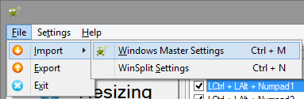
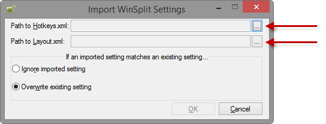
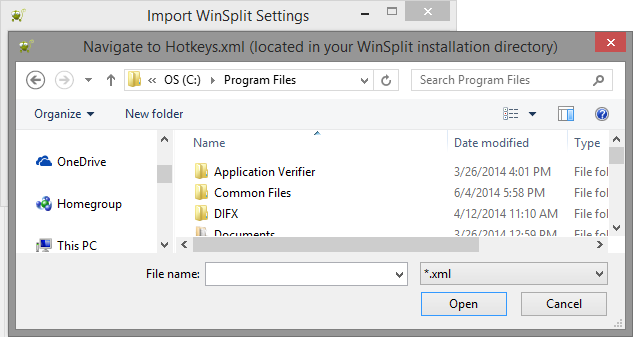

From the main menu of Windows Master, there is an option to import WinSplit settings...

Clicking that option will launch the dialog shown below.

Clicking the ellipsis buttons will result in a Windows Explorer dialog which prompts for the path to the appropriate XML settings file. The first field needs the path to Hotkeys.xml. The second field needs the path to Layout.xml. These files are likely found in C:\Program Files\WinSplit Revolution.
